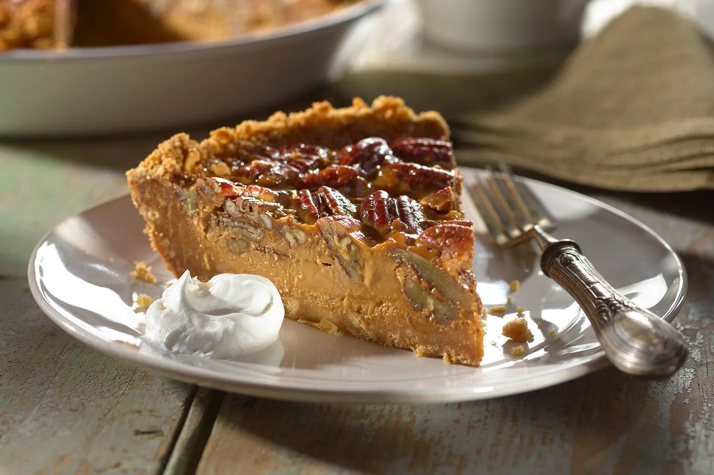

Pie de dulce de leche

Un pie de dulce de leche es un postre delicioso y decadente que se caracteriza por su relleno
cremoso y dulce de
dulce de leche. El dulce de leche es un producto lácteo dulce que se elabora cocinando lentamente leche y azúcar
hasta que se carameliza y adquiere un color marrón dorado y una textura espesa y suave.
- Base: Generalmente tiene una base de masa quebrada, similar a la de otros pies. Esta base
puede ser horneada previamente o rellenada cruda y horneada junto con el relleno. También existen versiones
con base de galletas trituradas.
- Relleno: El protagonista es el relleno de dulce de leche. Este es espeso, rico y tiene un
intenso sabor a caramelo con notas lácteas. La textura es suave y untuosa.
- Sabor: El sabor principal es dulce, con las profundas notas caramelizadas del dulce de
leche. Puede tener ligeras variaciones dependiendo de si se le añaden otros ingredientes al relleno, como
vainilla, crema o incluso un toque de sal para equilibrar el dulzor.
- Presentación: Puede presentarse de diversas maneras. A veces se sirve tal cual, otras veces
se decora con crema batida, merengue tostado, virutas de chocolate, nueces picadas o un hilo adicional de
dulce de leche.
- Textura: La combinación de la base crujiente con el relleno suave y cremoso es una de las
claves de su atractivo.
Ingredientes
- maza quebrada:
- 1 ½ tazas (190 gramos) de harina de trigo todo uso
- ½ cucharadita de sal
- ½ taza (113 gramos) de mantequilla sin sal, fría y cortada en cubos pequeños
- 3-5 cucharadas de agua helada
- Para el Relleno de Dulce de Leche:
- 1-2 latas (397 gramos cada una) de dulce de leche (pre-hecho o casero)
- Opcional: 1 cucharadita de extracto de vainilla
- Opcional: ¼ taza de crema de leche (nata para montar) para una textura más suave
- Notas:
- La cantidad de dulce de leche puede variar según el tamaño del molde y la preferencia personal.
- Para la base de galletas, la cantidad de mantequilla puede ajustarse para lograr una consistencia
arenosa
que se mantenga unida al presionar en el molde.
- La crema de leche en el relleno ayuda a hacerlo un poco más ligero y fácil de extender.
Preparación
- Opción 1: Base de Masa Quebrada
- Mezclar los ingredientes secos: En un tazón mediano, mezcla la harina y la sal.
- Incorporar la mantequilla: Agrega los cubos de mantequilla fría a la mezcla de harina. Con un cortador
de masa, dos tenedores o las yemas de los dedos, corta la mantequilla en la harina hasta que la mezcla
parezca arena gruesa con algunos trozos pequeños de mantequilla del tamaño de chícharos.
- Agregar el agua helada: Agrega el agua helada una cucharada a la vez, mezclando suavemente después de
cada adición. Deja de agregar agua tan pronto como la masa comience a unirse. No la trabajes en exceso.
- Formar un disco y enfriar: Forma la masa en un disco plano, envuélvela en plástico y refrigérala por al
menos 30 minutos (idealmente 1 hora) para que se relaje y sea más fácil de manipular.
- Extender la masa: Sobre una superficie ligeramente enharinada, extiende la masa con un rodillo hasta
obtener un círculo de aproximadamente 30 cm de diámetro (suficiente para cubrir la base y los lados de
un molde para pie estándar de 23 cm).
- Colocar en el molde: Con cuidado, enrolla la masa alrededor del rodillo y luego desenróllala sobre el
molde para pie. Ajusta la masa al molde, presionando suavemente contra el fondo y los lados. Recorta el
exceso de masa y puedes hacer un borde decorativo si lo deseas.
- Pre-hornear la base (opcional pero recomendado para una base más crujiente): Pincha la base con un
tenedor varias veces. Coloca un trozo de papel de hornear sobre la masa y rellénalo con pesos para
hornear (frijoles secos o arroz). Hornea en un horno precalentado a 180°C (350°F) durante 15-20 minutos.
Retira los pesos y el papel y hornea por otros 5-10 minutos, o hasta que la base esté ligeramente
dorada. Deja enfriar completamente antes de rellenar.
- Preparación del Relleno de Dulce de Leche:
- Ablandar el dulce de leche (si es necesario): Si el dulce de leche está muy espeso,
puedes
calentarlo
ligeramente en una olla a fuego bajo o en el microondas en intervalos cortos, revolviendo
constantemente,
hasta que esté más suave y fácil de extender.
- Opcional: Agregar otros ingredientes: Si deseas, incorpora el extracto de vainilla y/o
la
crema de leche al
dulce de leche y mezcla bien hasta que estén completamente integrados. Esto hará el relleno más suave y
cremoso.
- Montaje y Horneado (si la base no está pre-horneada):
- Verter el relleno: Vierte el dulce de leche preparado sobre la base de pie (ya sea la masa quebrada
pre-horneada o la base de galletas fría).
- Hornear (solo si la base de masa quebrada no fue pre-horneada): Si utilizaste la base de masa quebrada sin pre-hornear, hornea el pie en el horno precalentado a 180°C (350°F) durante unos 20-30 minutos, o hasta que el relleno esté ligeramente burbujeante en los bordes y firme al tacto. La base debe estar dorada.
- Enfriar completamente: Deja enfriar el pie a temperatura ambiente y luego refrigéralo por al menos 2-3 horas (idealmente durante la noche) para que el relleno se asiente y se firme completamente. Esto es crucial para poder cortarlo limpiamente.
Inicio